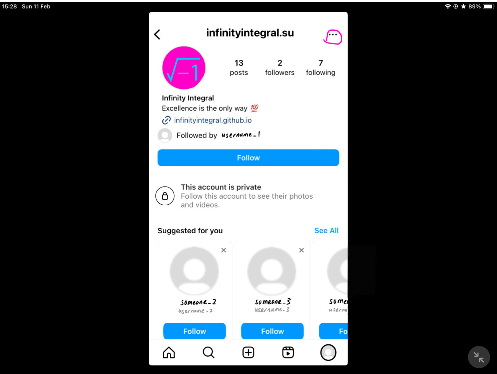
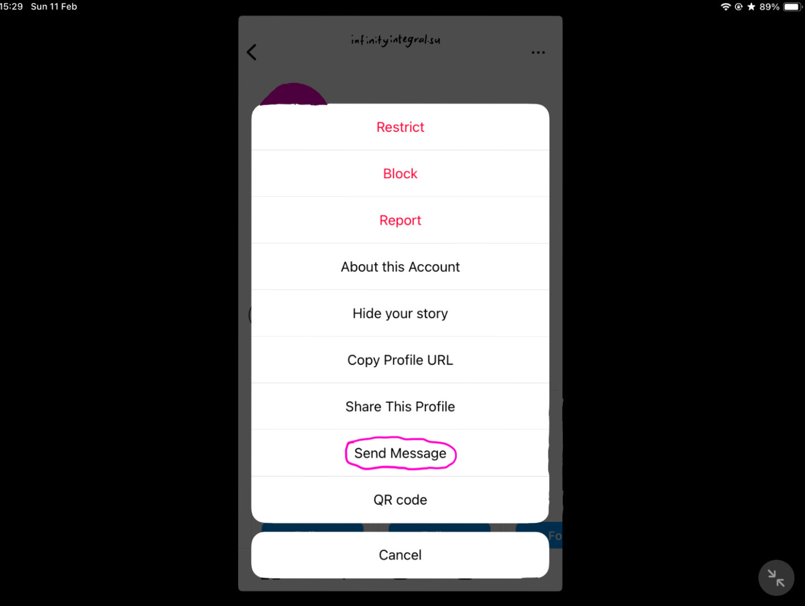
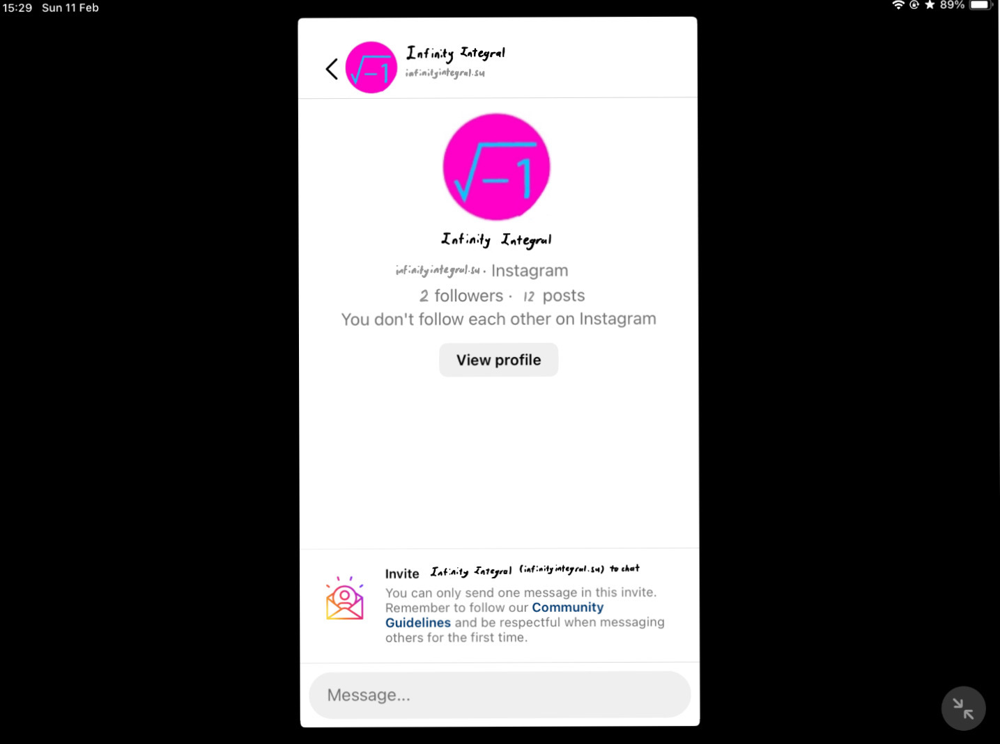
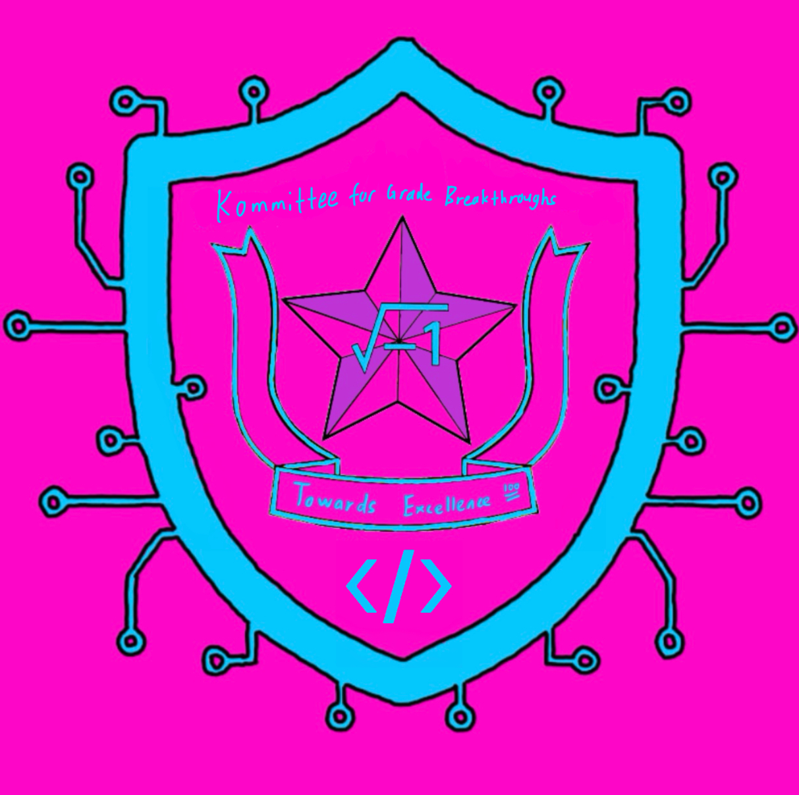

Social links
About me
I am currently a secondary 3 student. I have studied in Singapore before and know the Math Olympiad contest system there. I achieved 7th place in the Singapore Mathematical Olympiad Junior Round while attending the contest in Singapore. I am interested in the Olympiads (except Biology Olympiad and Astronomy Olympiad practical), anything related to computers (coding, web development, app development etc) and making interesting Mathematical structures. My contact information is below for you to report errors, request access to private pages, and send me Math Olympiad questions from DPR Korea (see home page for more information).
The main method of contacting me is by messaging me on Instagram. If your country does not allow Instagram, you can use email instead, but the same messaging format is required. My Instagram username is infinityintegral.su When messaging me on Instagram, your message must specify what you want me to do clearly, otherwise it will be ignored. You are not allowed to ask me to follow your account or accept your follow request.
Since my Instagram account is private (if not random people will start following me), it is slightly more complicated to message me. Follow the steps below to message me.
Step 1: After entering my Instagram profile page using the link above or by searching my username infinityintegral.su in Instagram, press the more options button at the top right corner of the page (circled in pink below).
Step 2: Press the send message button on the pop up message (circled in pink below).
Step 3: You have now successfully entered the messaging page.
Other contact methods
You can also contact me on Discord (username = infinityintegral.su), AoPS private message (username = Infinity_Integral), or by email (infinityintegral333@gmail.com). However, contacting me by Instagram is preferred. If you want to contact me by other methods, pls follow the same instructions as on Instagram.
Discord server
Unlike Evan Chen, I do not currently have a Discord server. However, you can request for me to make one by messaging me on Instagram. I will make a Discord server after receiving 5 requests. The name of the server will be Kommitee for Grade Breakthroughs (KGB) if it is created, and the link will be below (but now it is just a image).
.